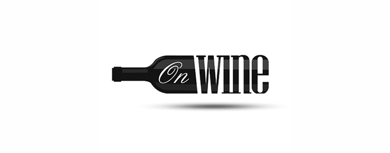

Nuit Notire
It took less than a decade to turn his dream into reality. First Tubbs planted his vineyards, then he built his Chateau, and in 1886 he imported a French-born winemaker. By 1896 his winery, then called A.L. Tubbs Winery, was the seventh largest in the Napa Valley. Like many other wineries in the area, winemaking at the Chateau came to an end with Prohibition. After Prohibition was repealed in 1933, Tubbs' grandson, Chapin Tubbs, continued the family's venture harvesting the vineyard, making some wines and selling grapes to other wineries and home winemakers. In 1940, Chapin rechristened the winery as Chateau Montelena Winery, a contraction of Mount St. Helena.
Two years after Chapin Tubbs' death in 1947,
winemaking was discontinued, and Chateau Montelena would not function as a winery for nearly two decades. The Tubbs family sold the Chateau in 1958, at which time the stone building and its overgrown grounds passed into the hands of Yort and Jeanie Frank who were looking for a peaceful spot to retire. The Franks emigrated from Hong Kong prior to World War II and had been living in Southern California where Frank was an electrical engineer. The Chateau inspired Frank to excavate a lake and landscape the grounds to reflect the Chinese gardens of his homeland. Today, Jade Lake is considered one of Napa Valley's most beautiful sanctuaries, home to a variety of fish and wildlife, and surrounded by weeping willows and native fauna.
The next chapter began with the renaissance of Chateau Montelena Winery and the Estate vineyard in the early 1970's. Under the leadership of Jim Barrett, the vineyard was cleared and replanted, and the Chateau outfitted with modern winemaking equipment. He assembled a team to oversee the vineyard and winemaking, then grew and contracted for the highest-quality grapes in the Napa Valley. In 1972 wines were made for the first time. Decades later, this celebrated family-owned winery continues to thrive with Jim's son Bo Barrett at the helm.
